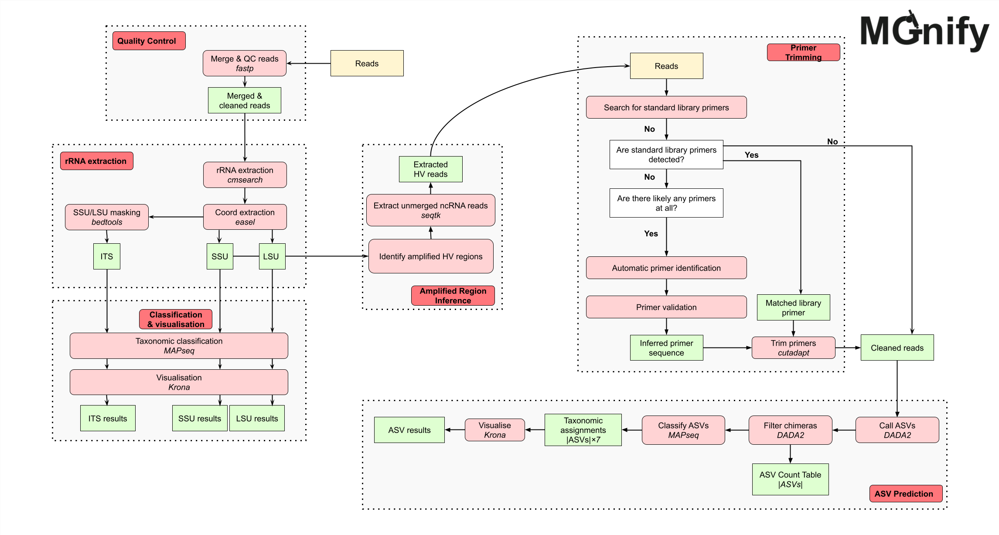

Amplicon analysis pipeline
The MGnify amplicon analysis pipeline v6.2 (GitHub repository) analyses amplicon sequencing reads to provide taxonomic profiles from closed-reference databases. For supported 16S and 18S datasets, it also infers amplified regions, identifies and trims primers, calls Amplicon Sequence Variants (ASVs), and assigns taxonomy to those ASVs.
Results available on MGnify
For each analysed run, MGnify provides:
- Quality-control summaries.
- Taxonomic profiles and interactive visualisations.
- ASV sequences, abundances, and taxonomic assignments for supported 16S and 18S datasets.
ASV results are not produced for LSU or ITS datasets.
Features
The amplicon analysis pipeline v6.2 has the following features:
- Amplicon analysis of short reads, including paired-end and single-end data
- Read quality control
- rRNA sequence extraction using Infernal/cmsearch
- Automatic amplified region inference for 16S and 18S rRNA
- Automatic primer identification, trimming, and validation
- Amplicon Sequence Variant (ASV) calling using DADA2
- Taxonomic classification and visualisation of ASVs using MAPseq and Krona
- Closed-reference-based taxonomic classification and visualisation of rRNA using MAPseq and Krona
- Taxonomic reference databases (SILVA, UNITE, ITSoneDB, PR2, Rfam)
Valid amplicons
At this stage, the only sequence amplicons that this pipeline is built for are:
| Amplicon | Closed-reference analysis | ASV analysis |
|---|---|---|
| 16S | ✓ | ✓ |
| 18S | ✓ | ✓ |
| LSU | ✓ | ✗ |
| ITS | ✓ | ✗ |
Technical details and results reference
The following sections describe the pipeline implementation and its downloadable output files. You do not need to run Nextflow or use these files to view results on MGnify.
Schema

Tools
| Tool | Version | Purpose |
|---|---|---|
| BBMap | 39.18 | Standardise reads FASTQ files |
| fastp | 1.0.1 | Read quality control |
| SeqFu | 1.20.3 | FASTQ sanity checking |
| seqtk | 1.4 | FASTQ file manipulation |
| SeqKit | 2.9.0 | FASTQ file manipulation |
| easel | 0.49 | FASTA file manipulation |
| bedtools | 2.30.0 | FASTA sequence masking |
| Infernal/cmsearch | 1.1.5 | rRNA sequence searching |
| cmsearch_tblout_deoverlap | 0.09 | Deoverlapping of cmsearch results |
| MAPseq | 2.1.1b | Reference-based taxonomic classification of rRNA |
| Krona | 2.8.1 | Krona chart visualisation |
| cutadapt | 4.6 | Primer trimming |
| R | 4.3.3 | R programming language (runs DADA2) |
| DADA2 | 1.30.0 | ASV calling |
| MultiQC | 1.24.1 | Result aggregation into HTML reports |
| mgnify-pipelines-toolkit | 0.1.8 | Toolkit containing various in-house processing scripts |
| PIMENTO | 1.0.2 | Primer inference toolkit used in the pipeline |
Reference databases
This pipeline uses five different reference databases. The files the pipeline uses are processed from the raw files available on each database’s website, for use by MAPseq and cmsearch.
| Reference Database | Version | Purpose |
|---|---|---|
| SILVA | 138.1 | SSU+LSU rRNA database |
| PR2 | 5.0 | Protist-focused SSU rRNA database |
| UNITE | 9.0 | ITS database |
| ITSoneDB | 1.141 | ITS database |
| Rfam | 14.10 | rRNA covariance models |
The preprocessed databases are generated with the Microbiome Informatics reference-databases-preprocessing-pipeline.
Output files
There are six general categories of results, which are separated into six different output directories by the pipeline, and each successful run/sample should have up to six of these directories:
├── qc
├── sequence-categorisation
├── amplified-region-inference
├── primer-identification
├── asv
└── taxonomy-summaryAs these results are per-run, many of the outputs use a run ID as a prefix. For the purposes of this documentation, we are using the run ID ERR4334351, which is a paired-end sequencing run. There are some slight differences in outputs when a run is single-end, which will be emphasised in italics, and use the run ID ERR1718805 instead.
qc
The qc directory contains output files related to the quality control steps of the pipeline, from the sanity checking performed by SeqFu, to the quality filtering done by fastp. The qc directory can contain these output files:
├── qc
├── ERR4334351.fastp.json
├── ERR4334351.merged.fastq.gz
├── ERR4334351_dada2_errors.txt
├── ERR4334351_dada2_stats.tsv
├── ERR4334351_multiqc_report.html
├── ERR4334351_seqfu.tsv
└── ERR4334351_suffix_header_err.json
├── sequence-categorisation
├── amplified-region-inference
├── primer-identification
├── asv
└── taxonomy-summaryResult files
- ERR4334351.fastp.json: This
jsonfile contains summary output of thefastprun, including how many reads and/or bases were filtered for various reasons. Thisjsonfile is also used later byMultiQCto generate its report files. - ERR4334351.merged.fastq.gz: This compressed
fastqfile contains the cleaned and merged reads from thefastprun. Note: if the run is single-end, this file won’t exist. - ERR1718805.fastp.fastq.gz: This compressed
fastqfile contains the cleaned reads from thefastprun. This file can be seen as the equivalent of the previous merged file for single-end runs. - ERR4334351_dada2_errors.txt: This
txtfile contains the DADA2 error log, generated if the process fails. This can be used to help diagnose issues with your data (e.g. lack of valid ASV sequences) and causes of failure in the script. Note: if the process succeeded, or if the run doesn’t contain SSU sequences, this file won’t exist. - ERR4334351_dada2_stats.tsv: This
tsvfile is used byMultiQCto generate its report files. As it comes from the ASV identification subworkflow, it will only exist for SSU sequences where ASVs were detected. It provides multiple data points to help determine the reliability of the analysis (usually limited by the quality of input data), in particular:- read counts are reported at multiple stages, in particular after the filter, trim, de-replication, merge, and ASV computation steps. We recommend reconsidering the reliability of this analysis if less than 90% of the initial reads contain ASV sequences, as these spurious results may indicate low quality input raw reads.
- truncation points for forward and reverse paired-ends (if appropriate). DADA2 truncates all reads to the same length to keep error modeling consistent across positions and ensure sequences are directly comparable during variant inference. This avoids biases from variable read quality and prevents shorter reads from being misinterpreted as biological variants rather than sequencing artifacts. A detected truncation point too far ahead in the read may explain a lack of ASVs in the analysis.
- chimeric reads are likely artifacts that do not mirror real biological sequences. We recommend reconsidering the reliability of this analysis if dada2_stats reports more than 25% of chimeric reads.
- ERR4334351_multiqc_report.html: This
htmlfile contains theMultiQCreport for that run. It will combine outputs from three different tools into the report;fastp,cutadapt, andDADA2. - ERR4334351_seqfu.tsv: This
tsvfile contains the output from the sanity checking performed bySeqFu.SeqFumakes a few checks of whether the given fastq files are correctly structured, and if this QC step fails, the contents of this file will indicate the reasons why. The contents of the tsv file are described in seqfu’s documentation. - ERR4334351_suffix_header_err.json: This
jsonfile contains the output from the sanity checking performed on the suffixes and headers of fastq files. It is expected that the fastq files ending with the suffix_1should contain the/1tag in the headers inside the file, and vice versa for the suffix_2and tag/2. Note: if the run is single-end, the header check should be to have no suffix, but still contain the/1tag as is standard.
sequence-categorisation
The sequence-categorisation directory contains output files related to the extraction of rRNA reads using Infernal/cmsearch and the specific rRNA clans from the Rfam reference database. The structure of the sequence-categorisation directory contains three different categories of files:
├── qc
├── sequence-categorisation
├── ERR4334351.tblout.deoverlapped
├── ERR4334351_SSU.fasta
├── ERR4334351_SSU_rRNA_bacteria.RF00177.fa
└── ERR4334351_SSU_rRNA_archaea.RF01959.fa
├── amplified-region-inference
├── primer-identification
├── asv
└── taxonomy-summaryThe output files of this directory are dynamic depending on the output, as the names and number of files will be different depending on what the reads matched to. To be specific, it depends on the matched rRNA amplicon type, which is usually one of:
- SSU
- LSU
- ITS
And it also depends on which Rfam clan the reads matched to, which can be one (or more) of:
- Bacteria, with Rfam ID RF00177
- Archaea, with Rfam ID RF01959
- Eukarya, with Rfam ID RF01960
Output files
- ERR4334351.tblout.deoverlapped: This
tbloutfile contains the deoverlapped output from runningInfernal/cmsearch, which describes the matching reads, including matching coordinates, confidence scores, and matching Rfam clan ID. - ERR4334351_SSU.fasta: This
fastafile contains all of the matching sequences to a particular rRNA amplicon type, being in this case the SSU. As described previously, this file name would be different if a different amplicon was matched. - ERR4334351_SSU_rRNA_bacteria.RF00177.fa This
fastafile contains the matching sequences of both a particular amplicon and a particular Rfam clan, in being in this case the bacterial SSU. This run has a similar file for archaeal SSU, ERR4334351_SSU_rRNA_archaea.RF01959.fa, which is a common combination. While this is the third and final output type in thesequence-categorisationdirectory, as shown here you can have more than one file of this kind.
amplified-region-inference
The amplified-region-inference directory contains output files related to the inference of the amplified region. The structure of the amplified-region-inference directory contains two different categories of files:
├── qc
├── sequence-categorisation
├── amplified-region-inference
├── ERR4334351.16S.V3-V4.txt
└── ERR4334351.tsv
├── primer-identification
├── asv
└── taxonomy-summaryThe output files of this directory are also dynamic for similar reasons as sequence-categorisation - it depends on which, and how many, amplified regions were found. The pipeline allows for at most two amplified regions, which are made up of two parts:
- The gene: either 16S or 18S.
- The hypervariable region: any region from V1 to V9, and any logical interval of regions e.g. V3-V4.
Output files
- ERR4334351.16S.V3-V4.txt: This
txtfile contains the headers of reads that were found to match a particular amplified region, being in this case the V3-V4 region of the 16S gene. As described previously, the pipeline allows for at most two amplified regions, and therefore up to two files of this type, with the naming being dynamic. - ERR4334351.tsv: This
tsvfile contains a summary of the output of the amplified region inference module. From zero to two regions, this file summarises the findings.
primer-identification
The primer-identification directory contains output files related to the automatic identification and trimming of primer sequences from reads, which is a crucial QC step for ASV calling. The structure of the primer-identification directory contains three different files:
├── qc
├── sequence-categorisation
├── amplified-region-inference
├── primer-identification
├── fwd_primers.fasta
├── rev_primers.fasta
├── ERR4334351.cutadapt.json
└── ERR4334351_primer_validation.tsv
├── asv
└── taxonomy-summaryOutput files
- fwd_primers.fasta: This
fastafile contains the sequences of any forward (5’-3’) identified primers that were then trimmed off usingcutadapt. - rev_primers.fasta: This
fastafile contains the sequences of any reverse (3’-5’) identified primers that were then trimmed off usingcutadapt. - ERR4334351.cutadapt.json: This
jsonfile contains the summary output of thecutadaptrun, including which primers were trimmed off, how many bases were trimmed off in the process, etc. Thisjsonfile is also used later byMultiQCto generate its report files. - ERR4334351_primer_validation.tsv: This
tsvfile contains the summary output of the primer validation module. Any primers that were trimmed off will have successfully been validated as primers usingInfernal/cmsearch, and this output file summarises these findings.
asv
The asv directory contains output files related to the calling of ASVs and their abundances, which is mainly performed by DADA2. The asv directory contains three files and at least one subdirectory with one extra file:
├── qc
├── sequence-categorisation
├── amplified-region-inference
├── primer-identification
├── asv
│ ├── ERR4334351_asv_seqs.fasta
│ ├── ERR4334351_DADA2-SILVA_asv_tax.tsv
│ ├── ERR4334351_DADA2-PR2_asv_tax.tsv
│ └── 16S-V3-V4
│ └── ERR4334351_16S-V3-V4_asv_read_counts.tsv
└── taxonomy-summaryThe subdirectories are dynamic based on the inferred amplified region. As the pipeline allows for up to two different amplified regions, there are two potential scenarios and subdirectory output structures:
- One amplified region, which will give just one subdirectory as in the example above
- Two amplified regions, which will contain three subdirectories - one for each region, and a
concatsubdirectory that will contain the concatenation of both amplified regions
Output files
- ERR4334351_asv_seqs.fasta: This
fastafile contains the sequences of the ASVs found byDADA2. - ERR4334351_DADA2-SILVA_asv_tax.tsv: This
tsvfile contains the assigned taxonomy of every ASV, performed byMAPseq, using the SILVA reference database. - ERR4334351_DADA2-PR2_asv_tax.tsv: This
tsvfile contains the assigned taxonomy of every ASV, performed byMAPseq, using the PR2 reference database. - 16S-V3-V4/ERR4334351_16S-V3-V4_asv_read_counts.tsv: This
tsvfile contains the read counts for each ASV, and is specific to the inferred amplified region. As described previously, the naming of this output is dynamic based on the amount and identity of the inferred amplified region(s).
taxonomy-summary
The taxonomy-summary directory contains output files summarising the various taxonomic assignment results using tools like MAPseq and Krona. The pipeline uses four different reference databases to assign taxonomy, and the outputs in taxonomy-summary are split based on the different reference databases:
- SILVA
- PR2
- UNITE
- ITSoneDB
However, there is added complexity in the output structure for two reasons:
- SILVA is actually split into two output directories: SILVA-SSU and SILVA-LSU.
- There are two kinds of taxonomic results for both SILVA-SSU and PR2: one for the hit matches and one for ASVs, with the latter being named as DADA2-SILVA and DADA2-PR2.
Output files - hit matches
├── qc
├── sequence-categorisation
├── amplified-region-inference
├── primer-identification
├── asv
└── taxonomy-summary
├── SILVA-SSU
│ ├── ERR4334351.html
│ ├── ERR4334351_SILVA-SSU.mseq
│ ├── ERR4334351_SILVA-SSU.tsv
│ └── ERR4334351_SILVA-SSU.txt
├── PR2
│ ├── ERR4334351.html
│ ├── ERR4334351_PR2.mseq
│ ├── ERR4334351_PR2.tsv
│ └── ERR4334351_PR2.txt
├── UNITE
│ ├── ERR4334351.html
│ ├── ERR4334351_UNITE.mseq
│ ├── ERR4334351_UNITE.tsv
│ └── ERR4334351_UNITE.txt
└── ITSoneDB
├── ERR4334351.html
├── ERR4334351_ITSoneDB.mseq
├── ERR4334351_ITSoneDB.tsv
└── ERR4334351_ITSoneDB.txtAll of the different possible subdirectories have the same four files. Taking PR2 as an example:
- ERR4334351_PR2.mseq: This
mseqfile contains the raw MAPseq output for everyInfernal/cmsearchmatch, i.e. each match’s taxonomic assignment. - ERR4334351_PR2.txt: This
txtfile contains the Krona text input that is used to generate the Krona HTML file. It contains the distribution of the different taxonomic assignments. - ERR4334351.html: This
htmlfile contains the Krona HTML file that interactively displays the distribution of the different taxonomic assignments. - ERR4334351_PR2.tsv: This
tsvfile contains the read count of every taxonomic assignment similar to the Krona txt file, but in a different easier-to-parse format.
Output files - ASVs
├── qc
├── sequence-categorisation
├── amplified-region-inference
├── primer-identification
├── asv
└── taxonomy-summary
├── DADA2-SILVA
│ ├── ERR4334351_16S-V3-V4_DADA2-SILVA_asv_krona_counts.txt
│ ├── ERR4334351_16S-V3-V4.html
│ └── ERR4334351_DADA2-SILVA.mseq
└── DADA2-PR2
├── ERR4334351_16S-V3-V4_DADA2-PR2_asv_krona_counts.txt
├── ERR4334351_16S-V3-V4.html
└── ERR4334351_DADA2-PR2.mseqThe two different subdirectories have the same three categories of files, two of which are dynamic in naming. Using DADA2-PR2 as an example:
- ERR4334351_DADA2-PR2.mseq: This contains the raw MAPseq output for every ASV, i.e. each ASV’s taxonomic assignment. This file is not dynamic.
- ERR4334351_16S-V3-V4_DADA2-PR2_asv_krona_counts.txt: This file contains the Krona text input that is used to generate the Krona HTML file for ASV results. This file is dynamic, as it will generate it on a per amplified region-basis. This means that in cases where there are two amplified regions, you will have three of these files - one for each amplified region, and one for the concatenation of the two.
- ERR4334351_16S-V3-V4.html: This file contains the Krona HTML file that interactively displays the distribution of the different taxonomic assignments for ASV results. This file is dynamic in the exact same way as the Krona text input file, i.e. based on the inferred amplified region(s).
Primer validation summary
The pipeline infers primer presence and sequence using PIMENTO. For any runs where a primer was detected, metadata about it will be aggregated into a top-level primer validation summary file (primer_validation_summary.json), including its sequence, region, and identification strategy. For example:
[
{
"id": "SRR17062740",
"primers": [
{
"name": "F_auto",
"region": "V4",
"strand": "fwd",
"sequence": "ATTCCAGCTCCAATAG",
"identification_strategy": "auto"
},
{
"name": "R_auto",
"region": "V4",
"strand": "rev",
"sequence": "GACTACGATGGTATNTAATC",
"identification_strategy": "auto"
}
]
},
{
"id": "ERR4334351",
"primers": [
{
"name": "341F",
"region": "V3",
"strand": "fwd",
"sequence": "CCTACGGGNGGCWGCAG",
"identification_strategy": "std"
},
{
"name": "805R",
"region": "V4",
"strand": "rev",
"sequence": "GACTACHVGGGTATCTAATCC",
"identification_strategy": "std"
}
]
}
]The value of the identification_strategy key can either be:
std- Meaning the primer was matched to one of the standard library primers (more reliable)auto- Meaning the primer was automatically predicted (less reliable)
See the amplicon analysis pipeline repository for detailed pipeline documentation.
Citation
@online{2026,
author = {, MGnify},
title = {Amplicon Analysis Pipeline},
date = {2026-10-15},
url = {https://docs.mgnify.org/src/docs/analysis/version6/amplicon.html},
langid = {en}
}